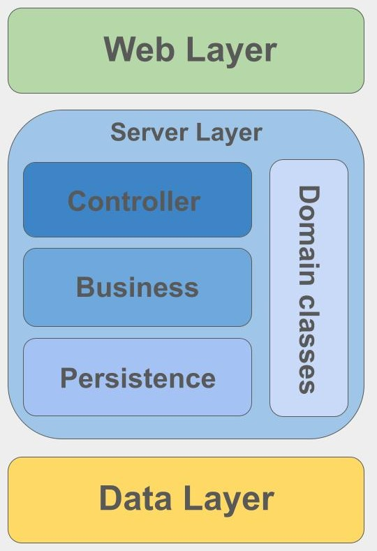

This document details the architectural design of the HealthCore hospital management system. The application leverages a highly decoupled, scalable, and maintainable structure by combining a Layered (N-Tier) Architecture with the Model-View-Controller (MVC) design pattern.
Here is the visual layout of our architecture system:

Architectural Layout & Design Patterns
The core philosophy behind this system is the separation of concerns. By dividing the application into distinct layers, components with similar responsibilities are grouped together, creating a modular foundation that enables independent scaling and easy maintenance.
To bridge user interaction with our underlying core business logic, the system maps the classic MVC pattern across these tiers:
- View: Managed entirely by the frontend web presentation layer.
- Controller: Implemented via specific routing and API components at the boundary of our backend server layer.
- Model: Encompasses the core business domain logic, data models, and persistence mechanisms within the server and data layers.
Layer Breakdowns
The system enforces a strict top-down data flow divided across three primary tiers:
1. Web Layer (The View)
- Responsibility: Handles user interactions, visual layout rendering, and browser-side inputs.
- MVC Role: Acts as the View. It formats and displays patient and medical data securely to doctors and patients, while passing user actions down to the server.
- API Docs: See com.healthcore.presentation (or your presentation package).
2. Server Layer (The Controller & Core Model)
- Responsibility: The core engine of the application. It orchestrates user authentication, access control for sensitive medical files, and executes clinical workflows.
- MVC Role: * The entry endpoints act as the Controller, routing incoming commands from the Web Layer.
- The internal service handlers act as part of the Model, evaluating business rules and validating medical data security.
- API Docs: See com.healthcore.business (or your business package).
3. Persistence Layer (The Model Persistence)
- Responsibility: Manages safe data persistence, relational database schemas, and cryptographic handling of sensitive patient health records.
- MVC Role: Part of the structural Model. It executes raw data retrieval and storage operations without any awareness of how the data will be rendered on the screen.
- API Docs: See com.healthcore.data (or your data package).
 1.9.1
1.9.1